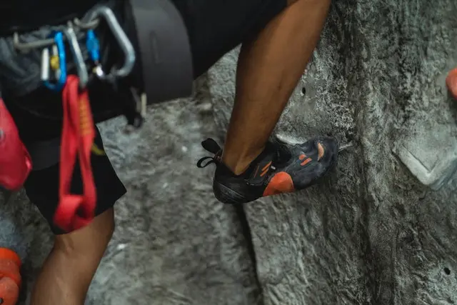

Struktura Planu Treningowego
Plan Boulderowy
Jest to przykładowa struktura planu którą możesz wykorzystać w swoim treningu natomiast trzeba pamiętać o tym żeby popatrzeć na swoją historię treningową w ciągu ostatnich 6 miesięcy i porównać ją do tego planu w celu uniknięcia kontuzji. Uproszczając jeżeli trenowałeś w ciągu tygodnia 5 godzin to postaraj się zbliżyć do tego czasu, potem możesz powoli zwiększać objętość treningu lub intensywność.
Plan: Tydzień 1
- 1x Board (Moonboard/Kilterboard...)
- 1x Przedłużone Bouldery
- 1x Objętość Boulderowa
- 1x Zwisy Maksymalne
- 1x TRX
- 1x Łączenie Łopatek
- 1x Podciągnięcia 5x5
- 1x Core
- 1x Pompki + Theraband
- 1x Rozciąganie górnej części ciała i bioder
Struktura Planu
Trening na ścianie systemowej zwiększy siłę palców i moc wspinacza w specyficznych ruchach ,także poprawi się technika i umiejętność trzymania napięcia w ciele.
Przedłużone bouldery ok 12 ruchowe zwiększą wytrzymałość krótką i siłę tak aby wspinacz nie miał problemów z dłuższymi boulderami.
Zwisy maksymalne pomogą w zwiększeniu siły palców, użyjemy tego treningu skupiając się na chwycie półotwartym, każdy zwis potrwa 10s z długimi przerwami.
Trening objętości zwiększy regeneracje i wytrzymałość wspinacza, będzie w stanie zrobić podczas jednego dnia więcej prób i przyspieszy swoją regeneracje pomiędzy treningami. Celem treningu jest zrobieniu ok. 40 boulderów w ciągu 60 min z lekkim zmęczeniem. Trudność boulderów powinna być dla nas na tyle łatwa żebyśmy na treningu jedynie czuli lekkie nabicie i cały czas byli w stanie skupiać się na technice.
Treningi ogólnorozwojowe czyli TRX, łączenie łopatek, Pompki + theraband, podciągnięcia i rozciąganie pomogą nam w utrzymywaniu dobrej postury i wzmocnieniu mięśni, które nie są tak często używane we wspinaniu.
Dostosowanie Planu
Pamiętajmy że ten plan nie jest zoptymalizowany pod Ciebie i jeżeli robiłeś przez ostatnie 6 miesięcy 2 razy zwisy maksymalne w ciągu każdego tygodnia to jedna sesja może nie wystarczyć żeby wywołać wystarczający stres który będzie prowadził do wzmocnienia palców.
Progresja Planu
Jest to przykład pierwszego tygodnia, powyższy plan będzie powoli się zwiększał w intensywności lub objętości, podczas 2 tygodnia zostanie dodana pierwsza połowa (30min) boulderingu projektowego a w 3 tygodniu już będzie cała (60min) sesja tak aby ciało było pod wystarczającym stresem aby tworzyć dalsze adaptacje. Obciążenia na chwytotablicy zostaną zwiększone po 3 tygodniu.
Regeneracja
Plan będzie używać struktury 3:1 czyli 3 tygodnie wymagających treningów i jeden tydzień odpoczynkowy, ale nie oznacza on totalnego resta tylko zmniejszenie objętości o połowę np. jeżeli robiłeś 6 zwisów na chwytotablicy robisz ich 3.
Jeżeli chciałbyś swój spersonalizowany plan, skontaktuj się z nami.